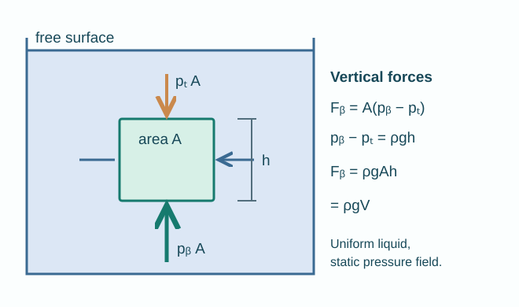

Why does a submerged object feel lighter?
A stone on a spring balance pulls less strongly when immersed in water, even though its mass does not change. The water pushes on every wetted surface. The deepest surfaces experience greater pressure. We must add the forces on the entire object, not just measure pressure at one point.
Pressure, density and force
Density ρ=m/V in kg/m³; pressure p=F/A in Pa=N/m² for a uniform normal force over a flat surface. Depth y is positive downwards. In a static uniform-density liquid, force balance on a thin fluid slice gives dp/dy=ρg, so p(y)=p₀+ρgy. Pressure acts normal to the surface, not always upward.
Derive the upward resultant
For a vertical-sided block with top and bottom area A and height h, the upward bottom force is pᵦA, downward top force pₜA, and horizontal forces cancel. Thus Fᵦ=A(pᵦ−pₜ)=ρgAh=ρgV. The constant atmospheric term cancels. For a general immersed shape, replace its occupied region by the same fluid at rest: surrounding pressure supports the weight of that replacement volume. The resultant therefore equals the displaced fluid’s weight, not the object's weight unless equilibrium requires it.

Change depth, not volume
Move the fully immersed 0.10 m-high block downwards. A=0.020 m², water density 1000 kg/m³, g=10 N/kg. Both face pressures increase equally. The pressure difference remains 1000 Pa and buoyancy remains 20 N.
Foundation: displaced volume
Fully immerse 0.002 m³ of material in water. Fᵦ=1000×10×0.002=20 N. The material’s own density is unnecessary to calculate this force.
Connected: tension changes direction
A 1.5 kg object of volume 0.001 m³ is fully submerged in water. Weight=15 N, buoyancy=10 N. An overhead cord must supply 5 N upward. A 0.6 kg object of the same volume instead requires 4 N downward from a bottom tether to remain fully submerged. A cord cannot push; the direction is determined by the force imbalance.
Advanced: a balance measures displacement
A rigid object weighs 30 N in air and 18 N on a balance while completely immersed in water. Neglect air buoyancy. Upthrust is 12 N, so V=12/(1000×10)=0.0012 m³ and m=3 kg. Density=2500 kg/m³. Check that ρobject exceeds water density, consistent with positive upward support.
Misconception and boundary
“Twice as deep means twice the buoyancy” confuses bottom pressure with net force. For a rigid fully submerged object in a uniform liquid the volume stays fixed. If the object crosses into a denser layer, or compresses, the same shortcut fails: account for the displaced density and volume in each region. Contact with a tank wall, trapped gas, surface tension or a changing fluid acceleration may require a different force model.
Exit check
Two sealed equal-volume objects, one heavy and one light, are fully submerged at different depths in the same water. Compare their buoyant forces. They are equal because the displaced water masses are equal; their weights and required support forces need not be equal. If one is only half immersed, its buoyant force is half under the same assumptions.
Continue to multilayer buoyancyExposition reference: OpenStax College Physics 2e §11.7 and §11.4. All derived text and drawings are authored candidates.